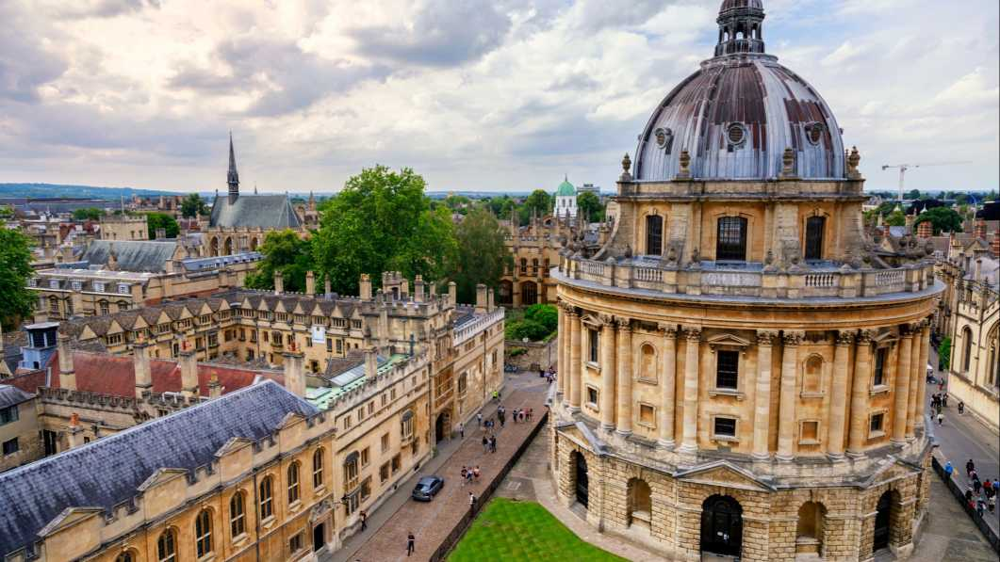
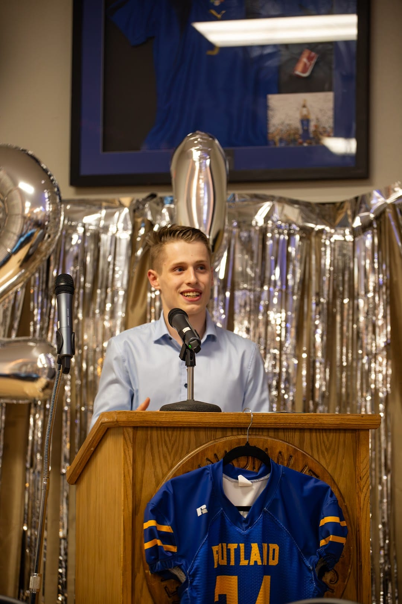
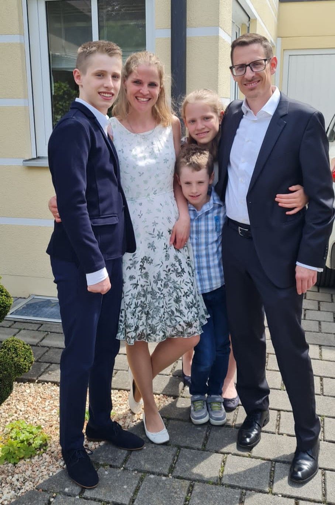
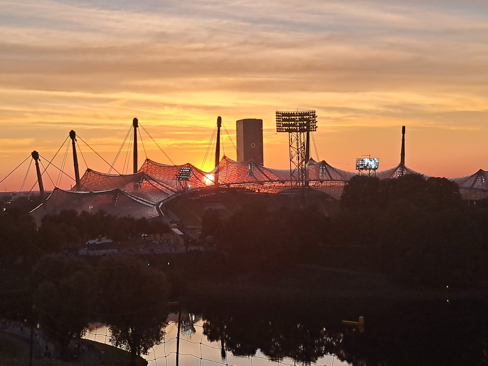
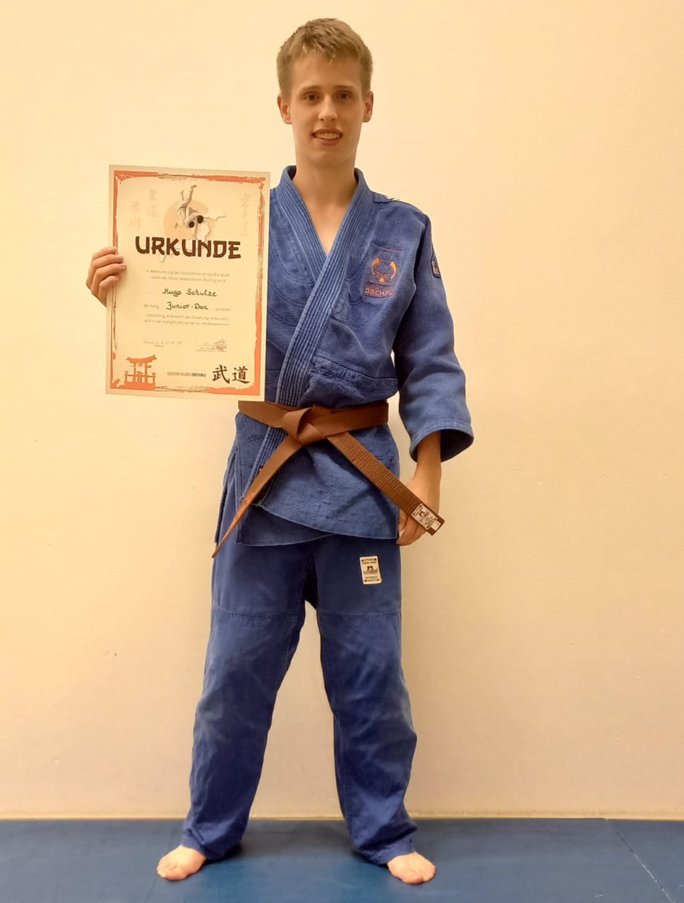
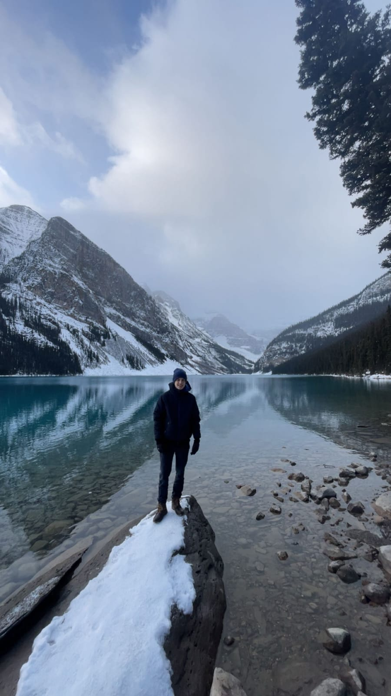
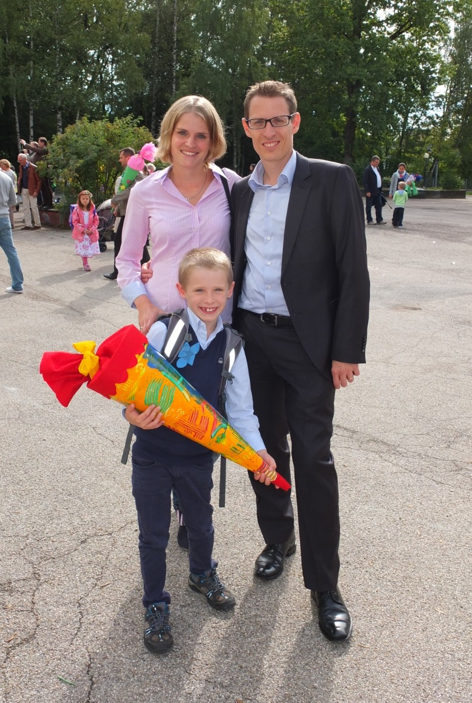
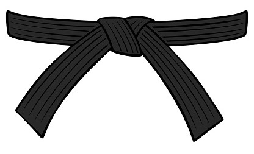

University of Oxford
Study at a world-class university with a tutorial system and deep academic immersion.

Name: Hugo Felix Schulze
Born: 04.12.2008
Nationality: German
Residence: Kelowna (BC, Canada)
Residence: Dachau (Bavaria, Germany)
Email: hugofelix.schulze@t-online.de
Phone: +49 179 4370018
I am a disciplined and analytical student who enjoys breaking down complex systems and solving problems step by step. I value structure, long-term thinking and continuous improvement when it comes to both academic and personal challenges. I have the same mindset in sports, where ambition and persistence motivate me to set and achieve demanding goals and push my limits.


I come from a supportive family consisting of my parents, Manuel and Janina, and my younger siblings, Linn and Nils. They provide me with a stable and reliable foundation in everyday life. Although growing up with siblings inevitably involves the occasional conflict, we stick together in the moments that matter, which ultimately strengthens our bond.

Munich is a city that successfully combines cultural tradition with modern ambition. Beyond its strong academic environment and economic opportunities, the city stands out for its high quality of life, shaped by its green parks and vibrant cultural scene. To me, Munich feels both familiar and inspiring; it's a place where I feel at home while still being motivated to grow and explore new possibilities.

Judo has been a defining part of my life ever since I started training at the age of four. While I have competed successfully at the highest level in my age group, what matters to me even more is everything beyond competition. Judo has shaped my mindset, strengthened my ambition and taught me how to handle pressure and setbacks. At the same time, it embodies values such as respect, tolerance and fairness. Through judo, I have found a strong sense of community and friendships that extend far beyond the sport itself, demonstrating the power of sport to connect people.

I try to spend as much time as possible outdoors, especially skiing and hiking. The mountains are the best place for me to clear my mind and escape everyday stress. While in Canada, I focus primarily on American football and strength training, appreciating both the physical challenge and the strategic element of the game. I also maintain routines such as doing daily push-ups and pursue triathlon training with the goal of completing an Ironman in the future. I also enjoy dancing as it is a great way to connect with others and build friendships. As a sports fan, I support the Detroit Lions, FC Bayern Munich and BMW Motorsport, and I have attended numerous live races, including 24-hour events such as the Nürburgring.

Spending a year in Canada was a defining experience for me. It forced me to adapt quickly to a new environment, take responsibility for my daily life and become more independent. At the same time, it enabled me to experience a different culture, meet new people and gain a broader perspective.

“You can’t just understand it. You have to feel it.” — Niels Bohr
I approach complex problems in a structured and analytical way, breaking them down into smaller parts and examining each step with precision. I developed this mindset through years of studying mathematics and participating in competitive problem solving, where clarity depends on careful reasoning. True understanding emerges when analysis evolves into intuition, when a problem is not merely examined but sensed. This combination of clear thinking and instinct is one of my greatest strengths.
“We are what we repeatedly do. Excellence, then, is not an act, but a habit.” — Will Durant
I am highly disciplined and consistently strive for top performance. My ambition pushes me to set demanding goals and test my physical and mental limits over extended periods. Through this process, I have learned that excellence is not achieved in an instant. It grows through repetition and through the commitment to show up every day, even when it is difficult or inconvenient. This consistency allows me to pursue ambitious goals with confidence and resilience.
“Dream big. Start small. Act now.” — Robin Sharma
I am proactive and self‑motivated, seeking out challenges and developing my own projects. I organise my work efficiently and take responsibility for achieving results. Independence means not only being able to work alone, but also being willing to take ownership, make deliberate decisions, and move forward without external direction. This mindset enables me to create opportunities, hold myself accountable, and pursue my goals with clarity and confidence.
“It is not the strongest of the species that survives, but the one most responsive to change.” — Charles Darwin
I can quickly understand new environments and adapt my behaviour strategically to achieve effective outcomes. This involves recognising patterns in systems and social dynamics and adjusting my approach accordingly. For me, adaptability is not a passive reaction but an intentional skill: the ability to observe, interpret and respond with clarity. This flexibility enables me to navigate unfamiliar situations with confidence and make informed, effective decisions.
Study at a world-class university with a tutorial system and deep academic immersion.

Reach the highest level of discipline and mastery.

Complete a full Ironman as a long-term endurance goal.
My academic and entrepreneurial goals:
Begin university-level coursework while still in school.
Gain mobility and independence for training and projects.
Overall, your financial situation remains stable with a healthy balance between essential spending, lifestyle choices, and long‑term investments. Your budgeting discipline ensures flexibility even with occasional higher one‑time expenses.
Agenda27 is a competition for exceptional teams. To compete seriously, you need more than just an idea; you need a coordinated group capable of thinking, building and executing with precision.
My goal is to form an elite team of specialists who have already proven their potential in international academic competitions such as the IMO or IGeo. By working together, rather than alone, we aim to succeed in high-level challenges, including startup competitions such as Jugend gründet.
To prepare for this, I am establishing Mindsoire, a foundation that provides early expertise in marketing, branding, supply chains, and strategic execution. This will ensure that, when this elite team is formed, we will have not only talent, but also the structure and clarity needed to win.
BUY WISDOM — OWN EXCELLENCE
Not every idea has to solve a problem; some create identity, culture, or aesthetic value. Mindsoire follows this path by combining luxury fashion with intellectual depth. The goal is not mass-market utility, but rather to create a style that resonates with audiences who value meaning, symbolism and excellence.
Mindsoire focuses on niche, high-potential audiences, including high-achieving students, luxury streetwear buyers, and micro-communities driven by social media.
The global streetwear market is valued at around 190 billion USD and is growing by 3–5 per cent each year. Generation Z alone has over 360 billion USD of purchasing power, and fashion-related hashtags on TikTok have received over 200 billion views. Niche fashion brands typically convert between 1.5 and 3.2 per cent, which is a strong indicator for targeted premium concepts.
Mindsoire stands out by combining intellect, luxury and personality — a rare combination in the fashion industry.
Mindsoire produces luxury sweaters and similar items bearing quotes and images of notable figures. Production is organised through AI-driven dropshipping, with production costs accounting for around 40 per cent and delivery costs accounting for up to 20 per cent, resulting in an estimated contribution margin of roughly 40 per cent per piece.
Promotion relies on social media, aesthetic content, and existing networks in relevant niches. Distribution is entirely online, with limited drops and curated releases becoming available as the brand matures.